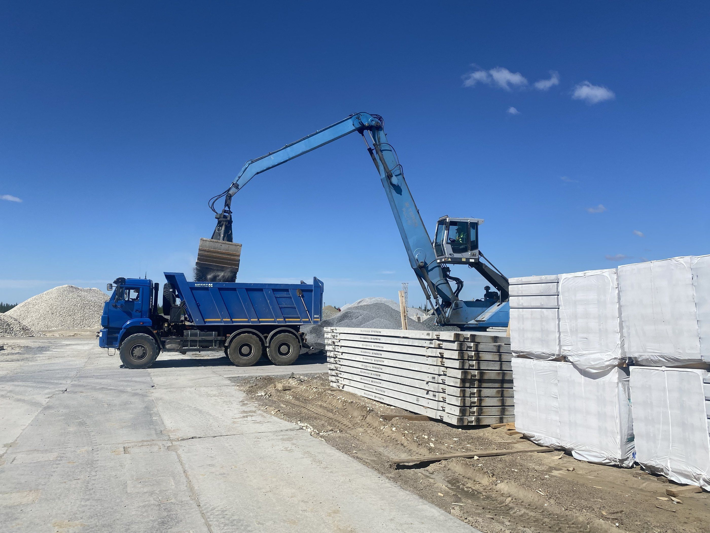

Услуга 03 / 03
Аренда ж/д тупика
Сдаём ж/д тупик с охраняемой площадкой для временного хранения любых тарно-штучных грузов.

1000 м от станции Еваяха
Принимаем: Металлопрокат, Металлоконструкции, ЖБИ, Блочное оборудование, Трубная продукция, Запорная арматура, Кабельно-проводниковая продукция, Цемент, Щебень, Буровые утяжелители, Барит, Минеральный порошок, Хлорид кальция, Известь, Полувагоны, Крытые вагоны, Платформы, Специализированные вагоны.
Что входит
Условия работы
- Подача вагонов в 1000 м от станции Еваяха
- Охрана 24/7, видеонаблюдение, освещение и ограждение
- Разгрузка нашей техникой
- Рабочие места для персонала заказчика
Грузы и вагоны
Принимаем любые тарно-штучные грузы
Вагоны можно отправлять к нам с любой станции России и СНГ — с Урала, из центра, Поволжья, Казахстана. Станция назначения — Еваяха.
Грузы
- Металлопрокат
- Металлоконструкции
- ЖБИ
- Блочное оборудование
- Трубная продукция
- Запорная арматура
- Кабельно-проводниковая продукция
- Цемент
- Щебень
- Буровые утяжелители
- Барит
- Минеральный порошок
- Хлорид кальция
- Известь
Род вагонов
- Полувагоны
- Крытые вагоны
- Платформы
- Специализированные вагоны
Ж/д цистерны (слив и налив) не принимаем.
Для грузоотправителей
Отгрузочные реквизиты
Укажите их при отправке вагонов на нашу базу. Каждую строку можно скопировать.
- Код ЕЛС
- 1006016508
- Грузополучатель
- ООО «ЯЛК»
- Код ОКПО
- 35055977
- Станция назначения
- ст. Еваяха, Свердловская ж/д
- Код станции
- 799506
- Код предприятия
- 6508
Фото с базы
Заявка
Узнать условия аренды
Опишите груз, количество вагонов и нужные услуги. Рассчитаем стоимость и свяжемся с вами.